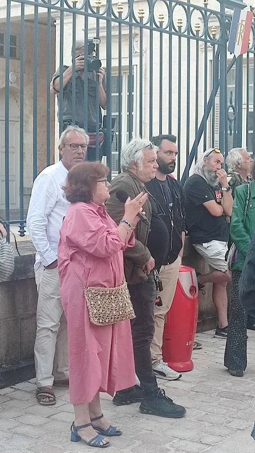
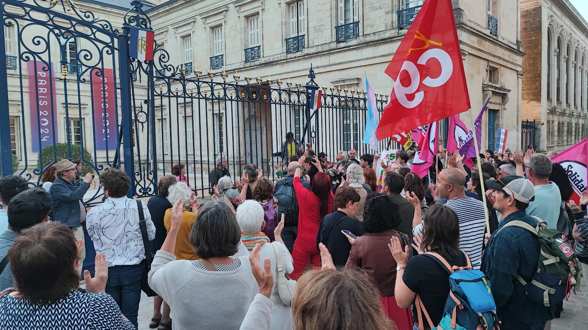

Prise de position fédérale
Rien n’est joué. Après le premier tour, le PCF 79 appelle à faire barrage à l’extrême droite
Date indiquée par Facebook · 2 juillet 2024
Repères éditoriaux
Nous avons appelé les électrices et les électeurs des Deux-Sèvres à prendre leurs responsabilités au second tour du 7 juillet 2024. Notre déclaration du 2 juillet et les photos du rassemblement devant la préfecture reviennent sur cette mobilisation.
Texte conservé avec la publication
Rien n'est joué ! L'extrême droite n'a pas gagné ni en France, ni en Deux-Sèvres !
Dimanche prochain, nous appelons chaque électrice et électeur à prendre ses responsabilités devant l'histoire pour leur avenir et celui de leurs proches car le moment est grave.
Notre détermination est totale face à l'extrême-droite du Rassemblement National, parce que nous le connaissons, nous connaissons ses priorités et ses obsessions idéologiques xénophobes, homophones, racistes, antisémites, anti-féministes, etc... Tout ce qui fonde le Rassemblement National est dangereux pour l'avenir de la France et de celles et ceux qui y vivent : depuis sa volonté d'un durcissement pénal portant atteinte aux libertés fondamentales d'associations, syndicales ou politiques, jusqu'à ses combats contre les immigrés et ceux qu'il considère comme "assistés" (bénéficiaires du RSA, personnes handicapées,...) en passant par sa volonté de remises en cause sociales et sociétales, en même temps que sa parfaite adhérence au capitalisme boursier et ses accointances avec les riches.
C'est pourquoi, le PCF qui l'a toujours combattu, continue à le combattre.
En conséquence, le PCF appelle les électrices et électeurs à faire barrage à l'extrême droite arrivée en tête dans la 3ème circonscription des Deux-Sèvres.
De même, le PCF79 appelle les citoyennes et les citoyens à porter leur voix sur Nathalie Lanzi et Delphine Batho, candidates respectivement qualifiées dans la 1ère et 2ème circonscription, pour faire vivre l'espoir d'un nouveau Front Populaire et la mise en place d'urgence de mesures réellement sociales : rétablissement de la retraite à 60 ans, relèvement du SMIC et des bas salaires, des moyens pour l'hôpital et la santé, pour l'éducation, contre la vie chère, et tant d'autres mesures de mieux vivre ensemble, toutes et tous ensemble, avec les personnes bi-nationales, les http://étranger.es/, les personnes issues de l'immigration, quelles que soient nos orientations philosophiques, spirituelles, sexuelles ou notre couleur de peau.
Pas une voix progressiste ne doit manquer aux deux candidates du Nouveau Front Populaire restant en lice en Deux-Sèvres dimanche prochain.
Trop de dégâts et de casse ont été commis par la politique d'E. Macron et de ses soutiens de la Droite et du Centre, tel que Bastien Marchive qui n'hésite pas à mentir à la population en s'attribuant opportunément des préoccupations de gauche à l'opposé de la réallité de ses votes à l'Assemblée Nationale !!!
Il faut mettre un terme à cette politique libérale, source de mal-vivre et de désespoir pour des millions de gens, en envoyant à l'Assemblée Nationale une majorité de députés du Nouveau Front Populaire.
Dimanche prochain, votez pour des jours heureux pour vous, pour vos enfants, pour vos parents, pour vos ami.es ! Votez Nouveau Front Populaire !
Niort, le 1er juillet 2024
Fédération du Parti Communiste Français en Deux-Sèvres
Rassemblement contre l'extrême droite dimanche soir


Sources
Archive rouge · export Facebook · AR-0002-FB-01335
À lire aussi · Tags antisémites. Une déclaration de Fabien Roussel · Le lien d’origine